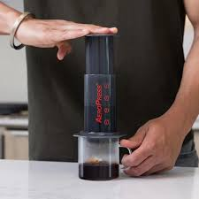

Ebrahims newest adventure, the world of Coffee
Home

Description
While Ebrahim is renowned for his chai, he also has started his coffee journey. Starting with a simple keurig brewer, he now prefers to hand grind his coffee beans and use an aeropress to brew his daily cup of coffee!
Ingredients
- Coffee Beans (Preferably medium roast)
- Water
- An Aeropress
- A kettle
- A scale
- Optionally: Sugar, milk or creamer
Steps
- Weigh out 16g of coffee (if using whole bean, grind it)
- Brew the kettle untill the water starts boiling
- Assemble the Aeropress onto the mug, placing the coffee grinds into it
- Pour in 200g of the nearly boiling water into the aeropress, ensuring that all coffee grinds are immersed
- Place the Aeropress plunger into the chamber, creating a vaccum that stops coffee from pouring into the mug
- Let the coffee grinds rest for two minutes or longer
- When ready, Push the plunger through the chamber, extracting your coffee into the mug
- Finish with creamer and sugar if you so choose
- Enjoy!